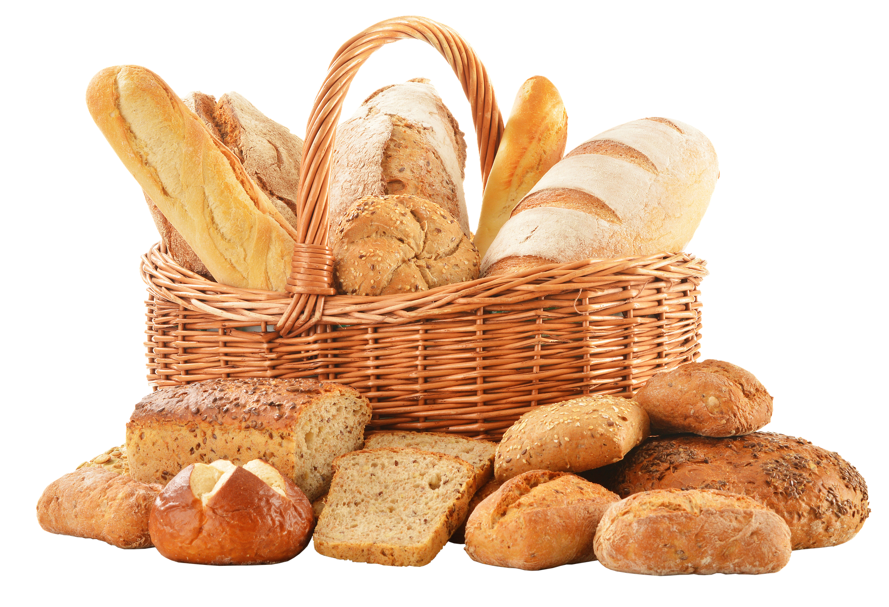

Bakery


Welcome to our bakery! We offer freshly
baked goods every day, made with the finest ingredients.
From crusty bread to sweet pastries, our selection is sure to satisfy
any craving. Stop by for a delicious breakfast
or grab a quick snack on the go. Our friendly staff is always ready
to assist you with any questions or special requests.
Come experience the warmth and aroma of our bakery for yourself!
Order Now!
Fresh
Our bakery takes pride in serving the freshest bread in town!
Tasty
Nothing beats the taste of freshly baked bread!
Natural
Made with carefully selected ingredients for the best taste!

How it's made?
Our bakery uses only the finest, locally sourced and milled wheat flour, unrefined sugar, fresh
eggs, and real butter to create our delicious baked goods. We also use high-quality
chocolate and a variety of fresh fruits and nuts to add flavor and nutrition to our desserts.
Thank you for choosing our bakery!
Order Now!


Flour
Spices
We use high-quality flour made from wheat that is locally sourced and milled. Our flour is unbleached and contains no additives or preservatives.
Our bakery carefully selects the best herbs and spices to complement the natural flavors of our baked goods, which are crafted with locally sourced and milled wheat flour of the highest quality.
Oat Flakes
Olive Oil
Our bakery uses premium quality rolled oats in our baked goods, which are locally sourced and carefully milled to create a deliciously hearty texture that perfectly complements our high-quality wheat flour.
We use only the finest extra-virgin olive oil in our bakery, sourced from trusted suppliers who uphold strict quality standards. Our olive oil is carefully selected for its robust flavor and is used to enhance the taste and texture of our baked goods, ensuring that each bite is as delicious as the last.
Best Chef in Field
As the city's premier baker, I take pride in crafting the most delicious and flavorful baked
goods using only the finest ingredients. From our freshly baked breads to our delectable
pastries and desserts, each item is made with the utmost care and attention to detail to
ensure that every bite is an experience to savor. Come and taste the difference for yourself at
our bakery today!
Order Now!
Discover Goodness
At our bakery, we believe that every bite should be a moment of pure enjoyment. That's why
we use only the highest quality ingredients and craft each item with care, from our fresh
breads to our decadent desserts. Come discover the taste of true artisanal baking at our
bakery and experience the difference for yourself!
Order Now!